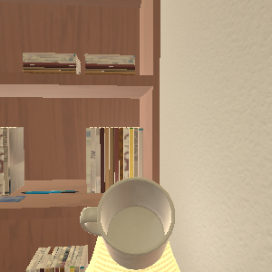
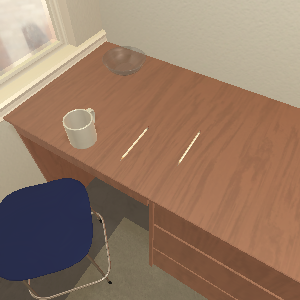
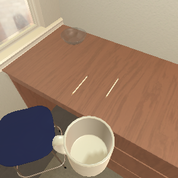
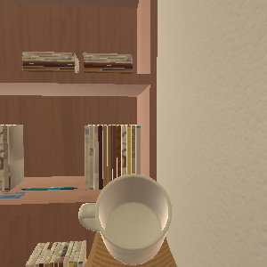
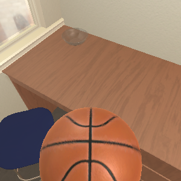
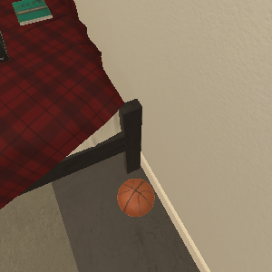
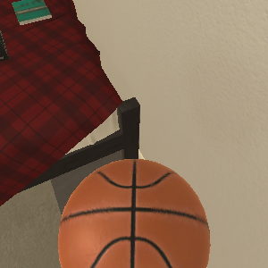
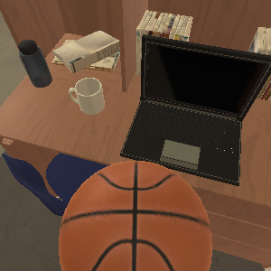

记忆系统
任务结束后保存经验，在相似任务中主动召回，并能持续纠错和整理。
Agent 记得住
让 Agent 记得住、管得住，也让人看得见。
本阶段完成 Memory 全生命周期接入、统一权限确认和 Web Console，并用两条真实 ALFWorld 轨迹展示经验如何跨任务沉淀和召回。
不是单纯增加几个工具，而是让 Agent 的长期经验、真实操作和用户介入进入同一条运行链路。
任务结束后保存经验，在相似任务中主动召回，并能持续纠错和整理。
Agent 记得住每个真实工具调用执行前统一判断；需要时等待人工批准，拒绝则不调用后端。
Agent 管得住在浏览器中呈现思考、工具调用、结果和审批，让用户看见并介入执行过程。
过程看得见从保存、检索到纠错和长期整理，每一步都有明确作用。点击下面的能力查看它解决的问题。
Agent 可以显式保存事实或步骤；Session 结束时，Finalizer 也会从真实对话和工具结果中提取经验。保存后会读取实际存储结果确认成功，而不是只相信一条“已写入”日志。
这里只选两条真实轨迹：第一条负责形成经验，第二条证明这条经验在新 Session 中被检索到。



机器人需要先拿起 Mug，在保持持有的状态下接近 DeskLamp，并打开灯。




物体换成 Basketball，但“拿起目标物并在指定灯下观察”的任务结构与上一条相似。
先拿起目标物，保持持有状态；接近指定灯具，再打开灯。
source_session: ...-0008 memory_type: fact memory_id: d64fb45c-2cbe-5dc1-a6b6-... storage_readback: verified
mindmemos_search
query: "desklamp location desk"返回结果明确来自 Episode 0008。Agent 得到的是可迁移的任务策略，而不是上一场景的隐藏状态。
recall_session: ...-0009 source_session: ...-0008 match_source: semantic recalled_memory: d64fb45c...
所有工具调用共用同一道执行门。权限确认发生在资源申请和后端执行之前，拒绝或超时不会触发真实操作。
例如写文件、启动进程，或调用会改变环境状态的工具。
先校验真实参数，再根据身份、能力、路径和模式做出决定。
批准后才调用后端；拒绝、超时、取消和连接中断都按拒绝处理。
Web Console 不另建一套 Agent，而是把同一个 Application Runtime 的实时事件、安全工具结果和审批请求投影到浏览器。
{ "action": "use", "object": "desklamp" }该工具将改变当前环境状态。请确认工具名称和参数。
这三项能力共享同一个 Runtime，Memory 不扩权，Permission 不复制业务逻辑，Web Console 不创造第二个执行终态。